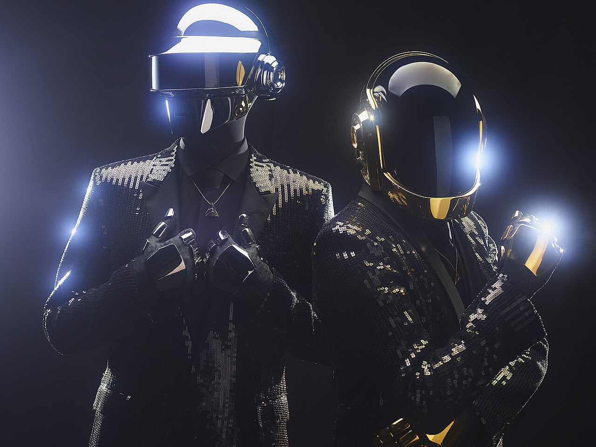
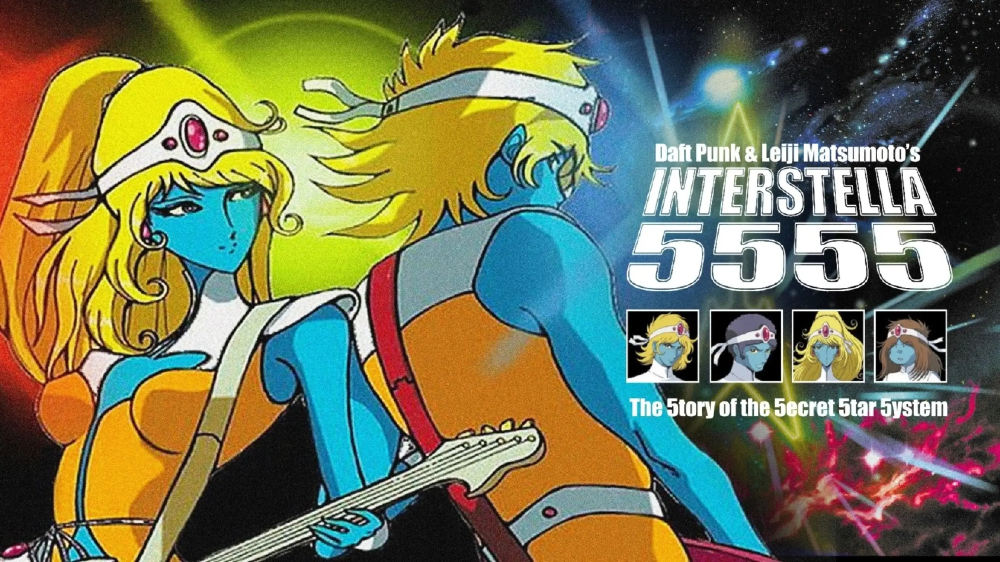
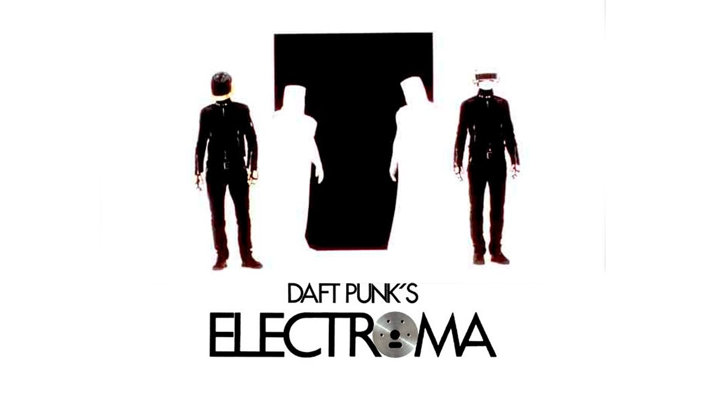
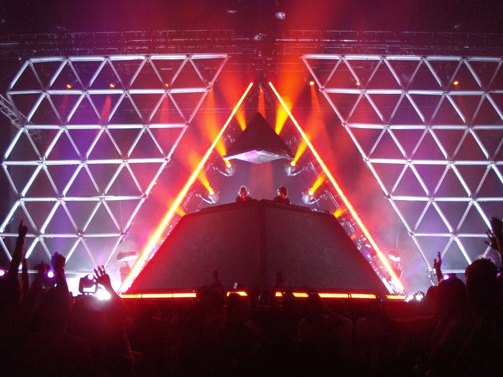
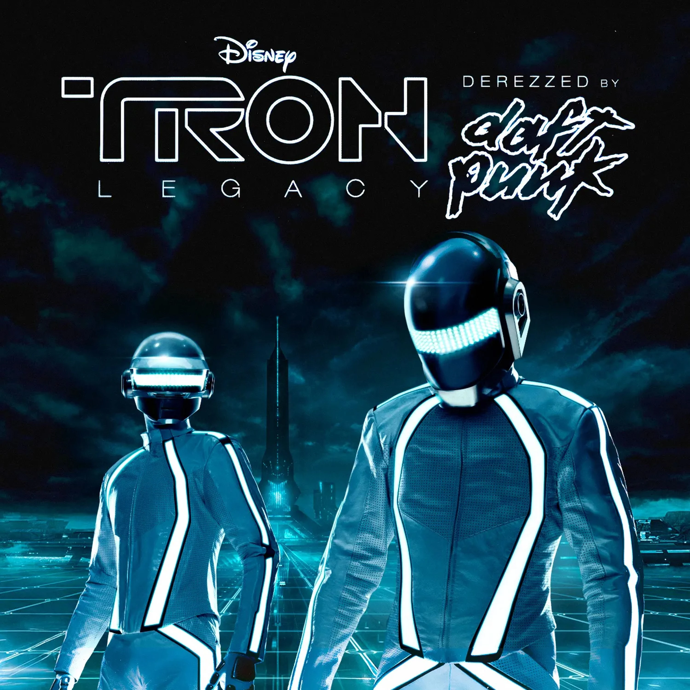

DAFT
PUNK
De Paris au monde entier. Explorez l’œuvre, les images et les identités derrière le duo qui a redéfini la musique électronique.

Explorer l’univers
Un voyage non chronologique à travers près de trois décennies de création.
Projets musicaux
Des machines brutes de Homework à la chaleur studio de Random Access Memories.
Projets divers
Films, tournées et bandes originales : quand la musique devient image et spectacle.

CINÉMA / 2003Interstella 5555
L’odyssée muette des Crescendolls, illustrant les 14 titres de Discovery, avec Leiji Matsumoto.

CINÉMA / 2006Electroma
Présenté à Cannes : deux robots errent dans le désert californien en quête d’humanité.

LIVE / 2006-2007Alive 2006-2007
La pyramide de LED et un mashup continu récompensé aux Grammy Awards.

CINÉMA / 2010Tron : L’Héritage
Une partition symphonique et électronique enregistrée avec 85 musiciens à Londres.
Deux hommes.
Une machine.
Les visages disparaissent. La musique demeure. Découvrez les trajectoires parallèles derrière les casques.
Découvrir les membres →